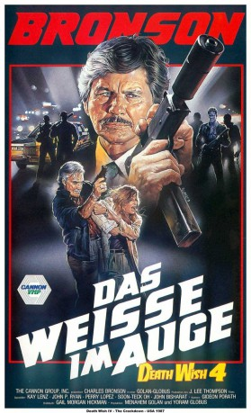
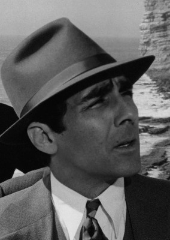
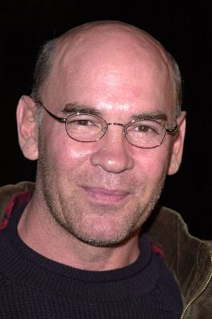

#4721 Death Wish 4 - Das Weiße im Auge
Alternativ: Death Wish 4: The Crackdown
 
 IMDB-Wertung: 5.3 / 10
IMDB-Wertung: 5.3 / 10  Metascore: 0
Metascore: 0 
Als die Tochter seiner Lebensgefährtin an einer Überdosis Kokain stirbt, greift Paul Kersey erneut zur Waffe. In einem brutalen Kleinkrieg spielt er mit Unterstützung eines zwielichtigen Millionärs die beiden führenden Drogenbanden LA?s gegeneinander aus.
Jahr: 1987
Dauer: 99 Minuten
FSK: 18
Land: USA Studio: Cannon Film DistributorsTonspuren:
Untertitel:
Auflösung: 1080p (1920x1040) Größe: 14028 MB
Genre: Action, Thriller, Drama, Krimi
Regisseur: J. Lee Thompson
Drehbuch: Lynn Siefert
Soundtrack:
Darsteller:
 Charles Bronson als Paul Kersey
Charles Bronson als Paul Kersey- Kay Lenz als Karen Sheldon
 John P. Ryan als Nathan White
John P. Ryan als Nathan White-  Perry Lopez als Ed Zacharias
 Soon-Tek Oh als Det. Phil Nozaki
Soon-Tek Oh als Det. Phil Nozaki- Dana Barron als Erica Sheldon
 Peter Sherayko als Nick Franco
Peter Sherayko als Nick Franco Danny Trejo als Art Sanella
Danny Trejo als Art Sanella Mike Moroff als Jack Romero
Mike Moroff als Jack Romero Tom Everett als Max Green
Tom Everett als Max Green David Fonteno als Frank Bauggs
David Fonteno als Frank Bauggs- Michael Wise als Romero's Hood
 Irwin Keyes als Bauggs's Chauffeur
Irwin Keyes als Bauggs's Chauffeur Tim Russ als Jesse
Tim Russ als Jesse- Mark Pellegrino als Punk
 Robert Axelrod als Italian Restaurant Bartender
Robert Axelrod als Italian Restaurant Bartender-  Mitch Pileggi als Cannery Lab Foreman
 Roydon Clark als Cannery Worker
Roydon Clark als Cannery Worker- Richard Aherne als The Real Nathan White
- Patrick Thomas als Roller Rink Punk , uncredited
 Danny Webb als Zacharias' Man , uncredited
Danny Webb als Zacharias' Man , uncredited- George Dickerson als Detective Reiner
- Jesse Dabson als Randy Viscovich
- James Purcell als Vince Montono
- Michael Russo als Danny Moreno
- Daniel Sabia als Al Arroyo
- Dan Ferro als Tony Romero
- Héctor Mercado als JoJo Ross
- Derek Rydall als Kid with Long Hair
- Connie Hair als Angie
- Craig Curtis als White's Chauffeur
- Margaret Howell als Rape Victim
- Gary Rooney als Masked Man #1
- J.P. Romano als Masked Man #2
- Tony Borgia als Masked Man #3
- Michelle Michaels als Marilyn - Kersey's Secretary
 Charles Robinson als Editor
Charles Robinson als Editor- Gerald Castillo als Lieutenant Higuera
- Timothy Dale Agee als Young Cop
- Jason Scura als Cop
- Linda Bukowski als Police Officer
- David J. Partington als Morgue Attendant
- Bruce Hensel als Dr. Rosenblatt
- Michael MacDuff als Doctor
- Sheila Gale Kandlbinder als Nurse
- Joan Carangi als Nurse
- Katrina Holden Bronson als Nurse
- Noa Scott als Nurse
- Gretchen Bryn als Intern
- Gene Bori als Restaurant Owner
Datei: X:\FSK18-Collections\Death Wish\Death Wish 4 - Das Weiße im Auge (1987, FSK18, 1920x1040).mkv seit 08.11.2016
Festplatte: FSK18
 Es gibt insgesamt 9 Filme in der Gruppe 'FSK18-Collections\Death Wish'
Es gibt insgesamt 9 Filme in der Gruppe 'FSK18-Collections\Death Wish'